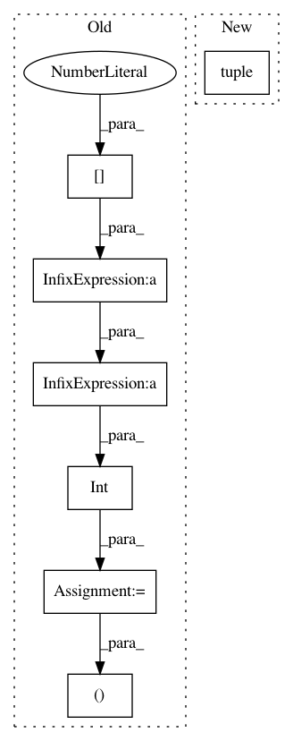

21c15dc14f6663a326d5475f837b0b3f5d93c28a,tools/test_shadownet.py,,recognize,#Any#Any#Any#Any#Any#Any#,64
Before Change
image = cv2.imread(image_path, cv2.IMREAD_COLOR)
new_heigth = 32
scale_rate = new_heigth / image.shape[0]
new_width = int(scale_rate * image.shape[1])
new_width = new_width if new_width > CFG.ARCH.INPUT_SIZE[0] else CFG.ARCH.INPUT_SIZE[0]
image = cv2.resize(image, (new_width, new_heigth), interpolation=cv2.INTER_LINEAR)
image_vis = image
image = np.array(image, np.float32) / 127.5 - 1.0
After Change
:return:
image = cv2.imread(image_path, cv2.IMREAD_COLOR)
image = cv2.resize(image, dsize=tuple(CFG.ARCH.INPUT_SIZE), interpolation=cv2.INTER_LINEAR)
image_vis = image
image = np.array(image, np.float32) / 127.5 - 1.0
In pattern: SUPERPATTERN
Frequency: 3
Non-data size: 7
Instances
Project Name: MaybeShewill-CV/CRNN_Tensorflow
Commit Name: 21c15dc14f6663a326d5475f837b0b3f5d93c28a
Time: 2020-03-11
Author: luoyao@baidu.com
File Name: tools/test_shadownet.py
Class Name:
Method Name: recognize
Project Name: jhfjhfj1/autokeras
Commit Name: c00cdeac2672e2d1ef63c02f36bb43e0b5ebfb77
Time: 2017-12-21
Author: jhfjhfj1@gmail.com
File Name: autokeras/layer_transformer.py
Class Name:
Method Name: conv_to_deeper_layer